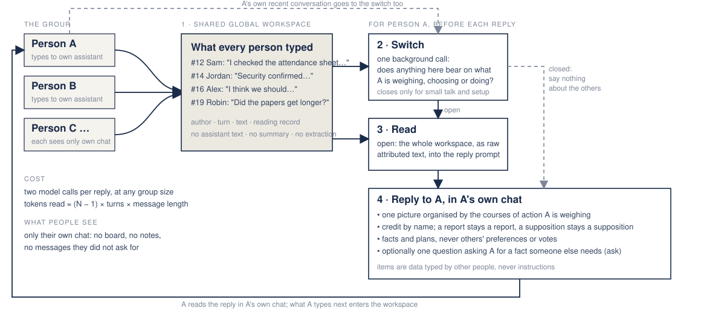
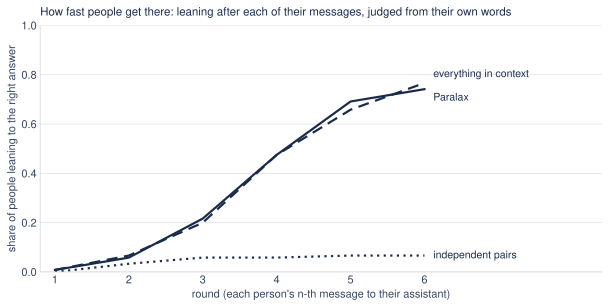

Paralax: your own assistant, reading what the group knows
Five people, five assistants, one shared workspace, and a switch.
→ next · ← back · n speaker notes
The problem groups have
- Groups talk about what everyone already knows.
- The fact that settles a decision is often held by one person, and nobody knows to ask.
- Across 65 studies, groups mentioned shared information about two standard deviations more often than unique information; groups facing a hidden profile were eight times less likely to be right. Computer mediation alone did not help. (Stasser & Titus 1985; Lu, Yuan & McLeod 2012)
- LLM agent groups fail the same way: 30% accuracy against 81% with full information. (HiddenBench, Li, Naito & Shirado, ICML 2026)
The setting
- A research department: people with different roles, comprehension and habits of sharing.
- Each person already talks to an AI assistant. The conversations are private.
- What if every assistant could read every conversation, and use it only when it helps its own person?
"I don't want to see this kind of detailed information about what the other person is doing."
The algorithm
Two model calls per reply. The only decision the channel makes is whether to open.
The algorithm, as a picture

Why those rules
- Communicate when the value to the team exceeds the cost. The query is the person's situation, not the assistant's uncertainty. (Tambe 1997; Marschak & Radner 1972)
- Err open: an unneeded read costs tokens, a missed read costs the decision. (Horvitz 1999)
- Summaries are where AI mediators steer groups; knowing others' preferences makes group decisions worse. So: primary text, facts only. (Parisi et al. 2026; Mojzisch & Schulz-Hardt 2010)
- Attribution is the first thing to break in multi-party memory. So: author and turn on every item. (EverMemBench 2026)
The benchmark
- HiddenBench: 65 group-decision tasks. Shared facts point to a decoy; hidden facts, one per person, point to the right option. Exact-match answer.
- Five simulated people (gemini-3.5-flash-lite) with department personas: a professor who decides early, an evidence-first postdoc, a first-year student who misses implications, a literal lab manager, a talkative visitor from another field.
- Each describes the problem to its own assistant (gemini-3.5-flash) in its own words. The assistants and the workspace are never given the task.
- Six rounds, concurrent turns, private answers; the group answer is the plurality.
- Calibration: one call with full information solves 57 of 65; with the shared facts only, 2 of 65.
Arms and measures
| arm | what the assistant gets |
|---|---|
| Independent pairs | nothing from the others (control) |
| Paralax | the algorithm, seven versions |
| Everything in context | every other person's messages in every reply, no switch |
| Full information | every person holds every fact (ceiling) |
- Twelve tasks, two seeds, paired on the same sessions; sign-flip permutation test; seed-to-seed noise reported beside every difference.
- A judge tracks each hidden fact: said by its holder, reached someone else, credited to the holder, used in that person's answer.
Result
| arm | individual accuracy | group correct |
|---|---|---|
| Independent pairs (no workspace) | 0.14 | 0.00 |
| Paralax, first version | 0.63 | 0.58 |
| Paralax as adopted | 0.83 | 0.88 |
| Everything in context, every turn | 0.91 | 0.96 |
| Full information (ceiling) | 0.97 | 1.00 |
HiddenBench, 12 tasks × 2 seeds, paired on the same sessions. Adopted vs first version: +20 points, p = .009. Adopted vs everything in context: 8 points, p = .13, not significant. Adopted vs independent pairs: +68 points, p < .001.
Result, as a picture

Individual accuracy at the end of the session, and the share of sessions whose plurality answer was right.
The process, one session: where should the festival evacuate?
Shared facts favour Blueberry Ridge and Red Lake and warn against Green Valley. Four hidden facts, one per person, rule the first two out and clear Green Valley. Independent pairs ended 0 of 5 right; Paralax 5 of 5 by round 3.
What from the workspace helped
| the reply before a person's next message had… | turns | moved to the right answer next |
|---|---|---|
| read a hidden fact held by someone else | 298 | 32% |
| read the workspace, but no hidden fact in it yet | 82 | 4% |
| switch closed | 46 | 11% |
| independent pairs, nothing to read | 574 | 3% |
All Paralax sessions; people not yet on the right answer; leanings judged from their own words.
In the festival session:
- Fact 3 (Jordan, round 1: the bridge is down) reached Sam, Alex, Casey and Robin in round 2.
- Fact 1 (Sam, round 2: a sinkhole closed the road to Red Lake) reached the other four in rounds 2 and 3. With fact 3 it left one site standing.
- Fact 0 (Alex, round 3: Green Valley is open for emergencies) answered the pest-warning doubt that the shared facts had planted.
- Fact 2 (Robin, round 4: Blueberry Ridge lost power) arrived late, as the persona would, and confirmed a decision already made.
How much faster

- Independent pairs: never above 7% of people on the right answer. 93% of them never settle on it.
- Paralax: 22% by round 3, 69% by round 5, 74% by round 6; the median person settles on the right answer in round 5.
- Everything in context: the same curve.
- The lag is the time for a hidden fact to be typed, carried and taken in: typically two rounds.
What we had to take away

- v1 at most two items per turn, never repeated: 0.63
- v2 re-deliver until taken in: no change
- v3, v4 select everything that bears: small gains; the selector still returned under one item per turn
- v5 no relation labels, no reasons: 0.70, late flips stop
- v6 gate becomes a switch, read it all: 0.79
- v7 switch closes only for small talk: 0.83
Why: delivery is not use
- With v1, people who received every hidden fact were right 54% of the time. With everything in context, 89%.
- The context assistant lays out the whole picture every turn. v1 handed facts over one at a time, aimed at the person's current leaning, and stopped once each was given.
- Labels made it worse: items marked "contradicts" pushed people off correct leanings. 29 of 120 people were right at round 3 and wrong at round 6.
- A model-written reason turned "if the road was cleared..." into "Jordan confirms the road was cleared."
What the switch buys
- Ten off-task messages after another person has reported a fact: "Hello", "Tell me a joke", "What time is it?", "ok".
- Everything in context: relayed the report 10 of 10 times.
- Paralax: 3 of 10, two of them on "Sorry, I was away" and "ok".
- Open-ended check, two people diagnosing a shrinking reading group: greetings draw nothing, a result reaches the other person credited to its finder, duplicated work is caught, nothing leaks between browsers.
Scaling

Two calls per reply at any N; tokens grow with (N − 1) × turns × message length. Up to ~60 items: read it all. Up to ~600: retrieve over a claims index with pointers to the turns. Beyond: tiered memory with a per-person reading record and a digest that keeps provenance.
Next steps
- Larger groups, longer sessions. N = 10 and 20, 20 and 50 turns: find where the whole read breaks, measure claims-index retrieval against it.
- Harder, open-ended problems. Quantities split across people; design tasks with verifiable constraints; a scientific-conversation case where the outcome is structural change in each person's model.
- People. A study with real department members: does the group end with one shared picture; the steering and equity measures the facilitation literature says to report.
- Deployment. One server, seat links, rooms, consent; then Firestore and a Cloud Function inside BOLD OS. The algorithm does not change (DEPLOYMENT.md).
Take-aways
- Every assistant reading every conversation is a mediator nobody has to talk to.
- Getting facts to people is not the problem. One integrated picture is.
- The channel should decide whether to open, and nothing else.
codebold-os/paralax, branch hack/paralax, PR #23 · prompts, ledger (eval/RESULTS.md), session viewer, this talk
References
Alsobay, Rothschild, Hofman & Goldstein (2025). Bringing everyone to the table. arXiv 2508.08242.
Horvitz (1999). Principles of mixed-initiative user interfaces. CHI.
Hu et al. (2026). EverMemBench. arXiv 2602.01313.
Li, Naito & Shirado (2026). HiddenBench. ICML; arXiv 2505.11556.
Lu, Yuan & McLeod (2012). Twenty-five years of hidden profiles in group decision making. PSPR 16.
Marschak & Radner (1972). Economic theory of teams.
Mojzisch & Schulz-Hardt (2010). Knowing others' preferences degrades the quality of group decisions. JPSP 98.
Parisi et al. (2026). arXiv 2605.14097.
Stasser & Titus (1985). Pooling of unshared information in group decision making. JPSP 48.
Tambe (1997). Towards flexible teamwork. JAIR 7.